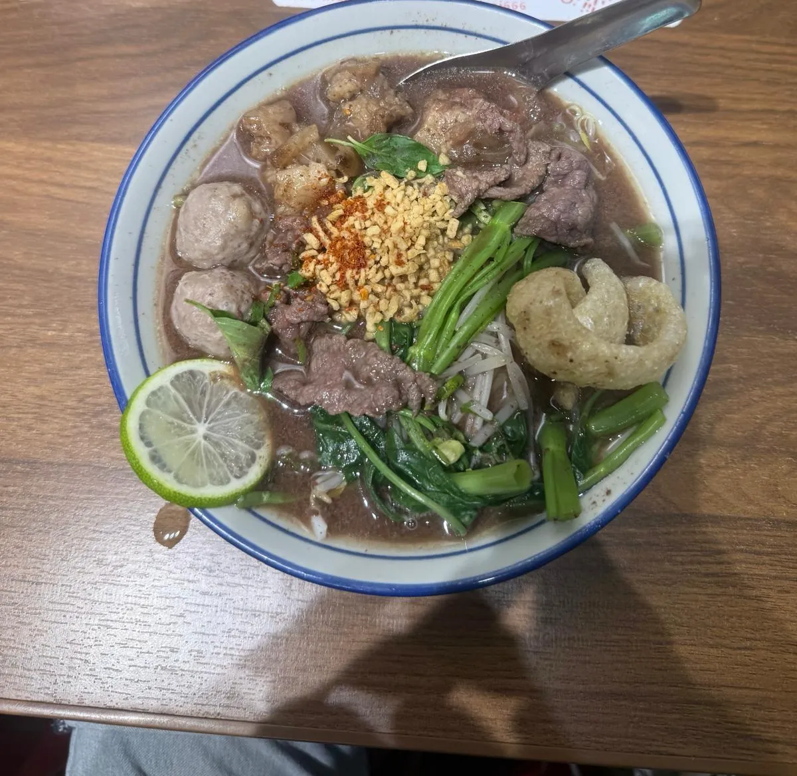
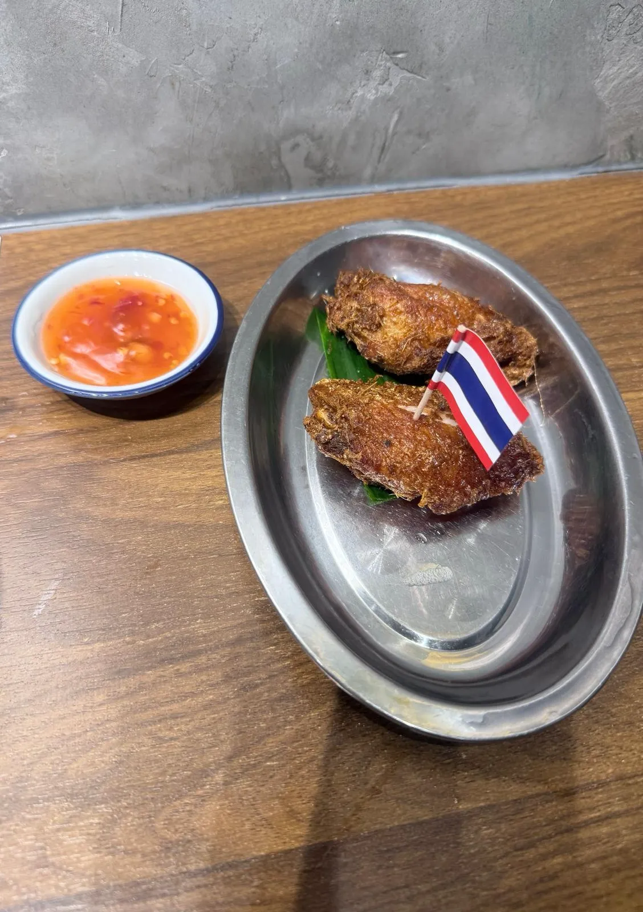
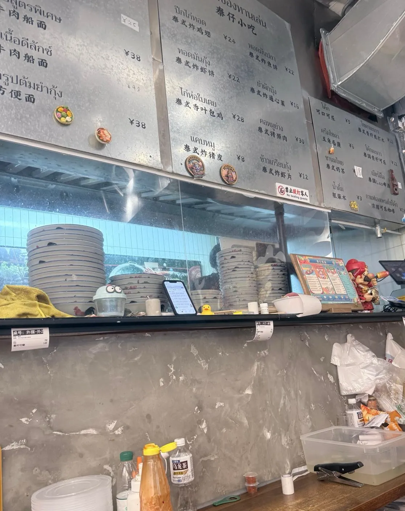

泰仔船面（華強北店）：一碗 ¥38 嘅泰式牛肉船面
華強北一間細舖泰式船面店，做嘅係「食完就走」嗰種快餐，唔係坐低歎嗰種。我叫咗雙人餐套餐，埋單 ¥88，自費，冇任何招待。一句總結：湯頭同雞翼都超出咗呢個價位嘅預期，唯一唔夠嘅係夏天嘅冷氣。下面拆開講，順便講點解「人均 ¥41」呢個平台數字唔應該當成你會俾幾多。
船面呢樣嘢係咩
船面（ก๋วยเตี๋ยวเรือ）唔係一款麵，係一種湯底。佢原本喺曼谷嘅水上市場船上賣，碗細、湯濃、食完一碗再嗌一碗，所以傳統上碗係細嘅。個湯底靠長時間熬牛骨或者豬骨，落香料同（傳統做法）少量血落去收濃，所以顏色深、質地稠，唔似一般清湯粉麵。
對一個習慣咗香港牛腩粉嘅人嚟講，第一啖最大嘅分別係湯唔係「清」而係「稠」。呢一點唔係做得唔好，係嗰樣嘢本身就係咁。知道咗先食，落差就唔會變成失望。
食咗咩，同幾多錢
當日紀錄
到訪日期：
點咗咩：
埋單：
營業時間：
地址同點去：
到訪日期只寫到「2026 年 8 月」，冇寫確實邊一日 —— 因為當日冇記低，而本站唔會補一個似層層嘅日子上去。資料塊入面嗰條 entry 自己都寫明係月份粒度。
價錢同人流呢啲嘢會變，所以佢哋抽咗出嚟獨立標明到訪日期 —— 實食紀錄呢個分區嘅硬規則之一。正文只留唔會變嗰部分。同區另外兩篇快餐紀錄：深圳桃園芳雯山、廣州北京路民記煲仔飯。

招牌牛肉船面 —— 湯頭係佢嘅本事。濃郁醇厚，唔係靠味精撐嗰種「重口」，係熬出嚟嗰種有骨膠感嘅稠。牛肉軟腍入味，唔係灼熟就算，係浸過嘅。配料亦夠：牛肉片、牛肉丸、牛腩、菜、豆芽、九層塔，加一塊炸豬皮做口感對比。一碗嘅分量對一個人嚟講夠飽。

香茅炸雞翼 —— 意外地係全餐最記得嗰樣。外皮金黃酥脆，咬開有汁，香茅味出得正而唔搶。呢樣嘢最易失手嘅位係炸完唔夠乾身、香茅味用香精頂替；兩樣佢都冇中。兩隻雞翼 ¥24，如果單點，佢自己企得住做一味小食。
門市價目牌同平台數字

門市價目牌（店內公布）
平台數據（大眾點評，唔係本站評分）
評分：
分項：
人均：
分類同榜單：
兩組數特登分開擺。上面嗰組係商戶自己掛喺店內嘅價，下面嗰組係平台按用戶帳單計嘅滾動統計 —— 兩者唔同級，亦唔應該混埋一齊講。營業時間、地址同步行距離都係平台資料，資料塊底部有註明。
而「人均 ¥41」呢個數，最容易被誤讀。佢係平台把所有帳單除人頭嘅平均，唔係一個人嚟食會俾嘅錢。實際上如果你一個人單點一碗船面加一碟雞翼加一枝可樂，係 38＋24＋5＝¥67；我兩個人叫套餐埋單 ¥88，即係人均 ¥44。¥41 呢個數要成立，多數係有人淨係叫一碗麵。平台人均講嘅係「其他人平均點成點」，唔係「你會俾幾多」 —— 呢兩件事喺快餐店嘅差距特別大，因為快餐店嘅單品價差好闊。
但唔係間間都咁。膳心記四寶煲仔飯嗰篇嘅人均 ¥30，就同一個人食一餐嘅實際銀碼幾乎一樣 —— 分別唔喺平台，喺個店型畀唔畀你分嚟食。嗰篇有拆。
用香港嘅尺量返
¥38 一碗有牛肉片、牛肉丸、牛腩三種肉嘅湯粉，換算大約 41 港元。香港同價位買到嘅，多數係一碗淨牛腩河或者牛丸河，湯底係店裡通用嗰個。所以差別唔喺價錢，喺湯底係咪為呢一碗而熬。呢間係。
華強北呢一帶食飯嘅選擇同動線，喺內地食飲地圖有講點揀。
但要講返轉頭：船面本身係一個「碗細、湯濃、食得快」嘅品類。如果你期望嘅係一碗坐低慢慢歎、有兩三樣配菜可以慢慢挑嘅麵，佢唔係嗰樣嘢。呢一點同好唔好食冇關，係品類本身嘅設定。
唯一想投訴嗰樣
夏天嘅冷氣可以再足啲。呢間係細舖、開放式廚房、爐火就喺你隔籬，加上你食緊嘅係一碗滾熱嘅濃湯 —— 三樣加埋，坐低十分鐘就開始出汗。
呢個唔係雞蛋裡挑骨頭：佢直接影響你會唔會食得完、會唔會想再嗌一碗。船面嘅傳統食法就係細碗、食幾碗，而熱到冇胃口就食唔到第二碗。要去嘅話，避開下午最熱嗰兩個鐘，或者揀近門口嘅位。
常見問題
「人均 ¥41」係咪即係我一個人食大約 ¥41？
唔係。嗰個係平台把所有帳單除人頭嘅滾動平均，包括淨叫一碗麵嘅人。實際單點一碗船面加一碟雞翼加一枝可樂已經 ¥67。快餐店嘅單品價差好闊，所以平台人均同你實際會俾嘅錢，差距特別大。要估自己會俾幾多，睇門市價目牌準過睇人均。
湯咁深色、咁稠，係咪落咗好多味精？
船面嘅湯底本身就係深色同稠身——傳統做法係長時間熬骨、落香料，再加少量血落去收濃。所以「深」同「稠」係品類特徵，唔係調味嘅結果。要分辨嘅位唔喺顏色，喺入口之後：熬出嚟嘅稠有骨膠感、回甘慢；靠調味頂嘅會即刻鹹、之後口乾。呢碗係前者。
一個人去食夠唔夠飽？
一碗夠。船面傳統上碗細、食幾碗，但呢間嘅分量係按內地快餐嘅份量做，唔係曼谷嗰種細碗。所以唔使照傳統食法嗌兩碗。